Praktikum Geogebra
Kalkulator Ajib untuk Matematika
Pendahuluan
Seringkali dalam melakukan pengerjaan soal matematika kita bingung apa maksud dari sesuatu yang kita kerjakan. Fungsi? Geometri? Turunan? Semua itu susah untuk kita kerjakan jika kita tidak tahu apa tujuan kita mengerjakan soal itu. Misal kita ambil sebuah topik yaitu Fungsi Kuadratik dan Linear yang simpel pada soal berikut ini.
\[ \begin{align*} f(x) &= a(x-h)^2 + 2\\ g(x) &= mx + 3 \end{align*} \] Tentukan setidaknya 10 kombinasi yang tepat untuk nilai \(a,\, h\) dan \(m\) sehingga \(f(x)\) dan \(g(x)\) saling memotong di tepat dua titik!
Soal seperti ini menjadi masalah karena kalo kita bayangkan betapa banyaknya kombinasi yang mungkin untuk masing-masing konstanta yang dicari itu mencapai tak hingga, walaupun kita hanya mencari satu kemungkinan dari semua kemungkinan yang ada. Kita semua tahu salah satu cara termudah adalah dengan membuka google dan memilih salah satu dari AI favorit kita semua dan mencari jawaban berdasarkan itu namun, kita tidak dapat tau secara intuitif dan cepat lupa kenapa jawaban tersebut bisa didapatkan. Salah satu cara termuda selain AI adalah dengan menggambarkan kedua fungsi tersebut untuk kita pelajari dan telaah perlahan. Ketika kita menggambarkan fungsi kita juga akan terbiasa untuk mengetahu sifat-sifat fungsi yang kita inginkan. Berikut adalah satu jawaban yang dapat kita peroleh.
Ketika kita tetapkan \(m = 0\) maka kita akan mendapatkan garis \(x=3\). Langkah berikutnya adalah dengan melakukan persamaan \(f(x)=g(x)\). Dengan itu kita dapat
\[ \begin{align*} a(x-h)^2 + 2 &= 3\\ a(x-h)^2 &= 1\\ (x-h)^2 &= 1/a\\ (x-h) &= \pm\sqrt{1/a}\\ x_{1,2} &= \pm\sqrt{1/a}+h \end{align*} \] yaitu nilai \(f(x_1)\) dan \(f(x_2)\) adalah titik potongnya.
Dapat dilihat dari jawaban tersebut sangat tidak efisien ketika kita tidak tau cara menjawab soal tersebut. Namun, dengan bantuan Geogebra kita bisa melihat grafik dari sembarang kombinasi nilai yang kita dengan mudah.
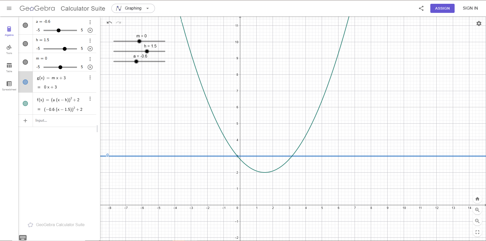
Sekarang kita akan belajar dasar-dasar dari Geogebra!.
Instalasi dan Interface
Sebelum lanjut ke pembahasan Geogebra, kita bisa menggunakan Geogebra pada dua opsi yaitu versi cloud dan versi local.
Versi Local Untuk menginstall Geogebra di device kita silahkan kunjungi website Download dan pilih opsi
DownloadatauUnduh. Ketika kita sudah selesai mengunduh akan ada file dengan ekstensi.exedengan itu silahkan jalankan program. Tampilan dari program akan menunjukkan interface berikut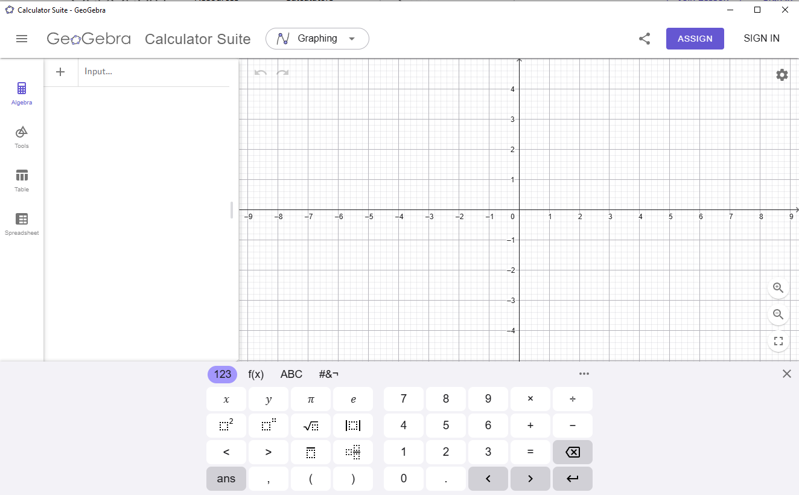
Tampilan Geogebra via Local App Versi Cloud Untuk versi ini kita tidak perlu melakukan instalasi apapun. Pada laman browser kita silahkan ketik
Geogebradan pilih website teratas yang muncul atau pada link ini. Setelah itu silahkan pilih menuStart Calculatordan kita akan diarahkan pada laman dengan tampilan yang sama persis dengan versi lokal sebelumnya.
Baiklah, pada titik ini kita sudah berada pada interface dari Geogebra. Sederhananya, tampilan geogebra ada 4 bagian yaitu berikut.
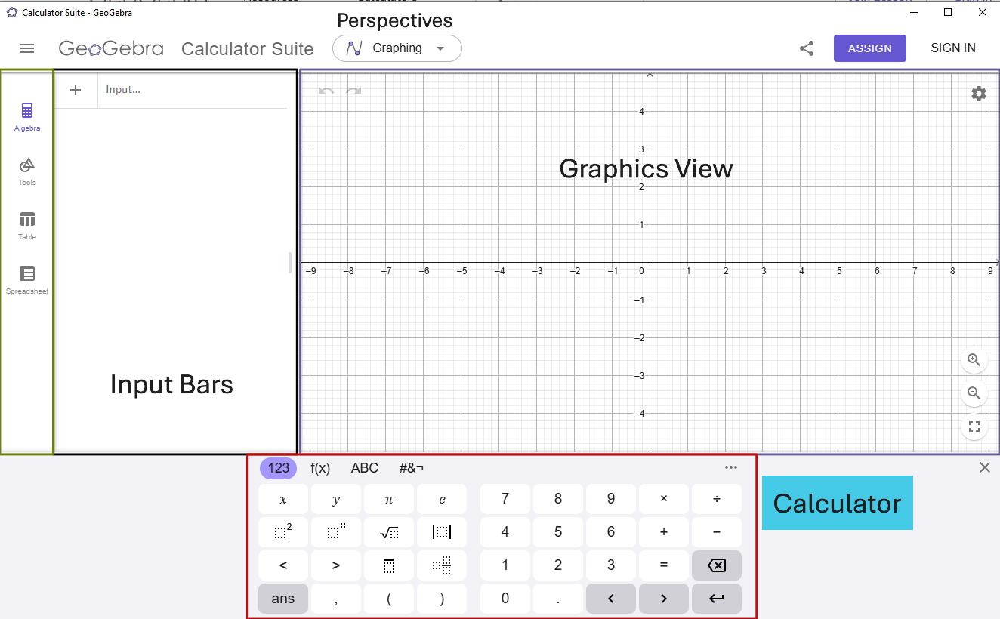
Pada bagian Perspective kita dapat melihat bahwa ada 6 tipe kalkulator yang disediakan yaitu:
Graphingadalah kalkulator yang umumnya digunakan untuk fungsi-fungsi 1 variabel saja dengan kata lain dua dimensi, dalam hal ini adalah fungsi dengan bentuk \(y = f(x)\). Tidak hanya fungsi saja namun kalkulator ini dapat digunakan untuk persamaan-persamaan eksplisit maupun implisit dua variabel. Contoh persamaan eksplisit seperti fungsi kuadrat dan persamaan implisit seperti persamaan lingkaran dan masih banyak lagi. Kalkulator ini juga bisa digunakan untuk menggambar bidang dua dimensi, walaupun ada kalkulator yang lebih cocok untuk itu.3D Calculator, sesuai namanya adalah kalkulator yang bekerja pada ruang tiga dimensi. Fungsi-fungsi dengan dua variabel dalam bentuk \(z= f(x,y)\) digunakan di sini, selain itu juga kita bisa menyelesaikan masalah-masalah persamaan implisit tiga variabel. Misalnya fungsi hiperbolik dan persamaan bola.Geometrykurang lebih sama sepertiGraphinghanya saja penggunaannya lebih berorientasi pada obyek. Kalkulator ini lebih fleksibel dibandingkan denganGraphingjadi cocok untuk membuat obyek-obyek yang serasa mulai aneh.CASatau Computer Algebra System adalahh kalkulator yang relatif lebih “ngoding” dalam artian kita tidak bisa melihat secara mudah seperti pada kalkulator lainnya melainkan ke menggunakan kalkulator melalui script. Lebih lanjut lagi silahkan teman-teman menelusuri Wolfram Mathematica karena keduanya identik.Probability CalculatorKhusus untuk analisis peluang dan distribusi statistik. Kamu dapat memilih distribusi (misalnya Normal, Binomial) dan mengatur parameter seperti \(\mu\) dan \(\sigma\) untuk menghitung probabilitas atau menampilkan grafik distribusi dengan area probabilitas yang diarsir.Scientific CalculatorKalkulator numerik cepat mirip kalkulator ilmiah biasa yang menangani operasi aritmetika, fungsi trigonometri, logaritma, akar, dan pangkat, seperti \(\sin(30°)\), \(\sqrt{2^2 + 3^2}\), atau \(\log{100}\), dan langsung menampilkan hasilnya dalam bentuk angka. Pikirkan saja seperti kalkulator saintifik casio melalui website.
Pada modul ini akan dijelaskan sedikit untuk kalkulator Graphing dan 3D Calculator. Untuk dokumentasi lengkap Geogebra kita dapat mengunjungi situs [Geogebra Github Page]https://geogebra.github.io/docs/manual/en/
Kalkulator Graphing
Membuat Grafik Fungsi
Seperti yang sudah dijelaskan pada bagian sebelumnya, kalkulator ini berfokus pada bidang dua dimensi, lebih lanjut lagi yaitu persamaan yang melibatkan 2 variabel yaitu \(x\) dan \(y\).
Salah satu hal dasar yang kita dapat lakukan adalah menggambarkan grafik dari suatu fungsi \(y = f(x)\) dan menampilkan grafik tersebut ke dalam Graphics View. Misalkan kita ingin membuat fungsi linear \(y = -2x - 10\).
Pada Input Bars masukkan ekspresi matematika berikut.
y = -2x - 10Ketika kita ketik enter pada baris tersebut akan muncul grafik pada window Graphics View
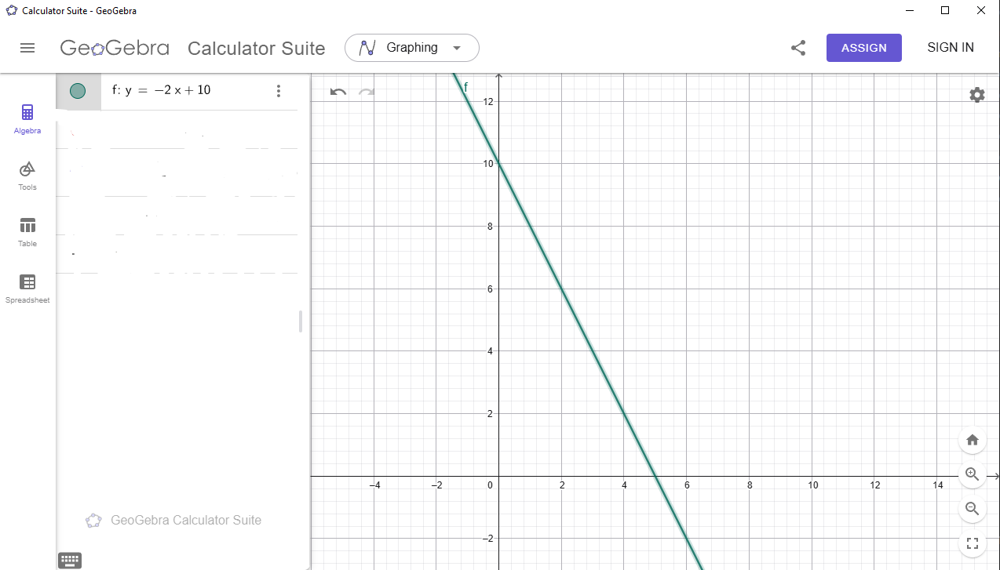
SESIMPEL ITU!
Bagaimana untuk fungsi lain? Bisa banget, kita tinggal mengubah ekspresi dari fungsi pada Input Bars yang sudah terisi tadi.
Baiklah karena kita sudah tahu bagaimana cara memberikan input suatu ekspresi fungsi ke menjadi sebuah grafik, sekarang bagaimana jika kita ingin banyak fungsi atau ekspresi lainnya pada satu grafik? Untuk melakukan itu kita tinggal menambahkan fungsi-fungsi baru ke Input Bars. Misalkan kita ingin menambakan fungsi-fungsi baru berikut.
Fungsi Kuadratik \(y = x^2 -2x - 1\)
y = x^2 - 9Fungsi Kubik \(y = \frac{1}{10}x^4 - 2x^2 - \frac{32}{5}\)
y = 1/10 x^4 - 2x^2 + 32/5Persamaan Lingkaran \(x^2 + y^2 = 4\)
x^2 + y^2 = 4
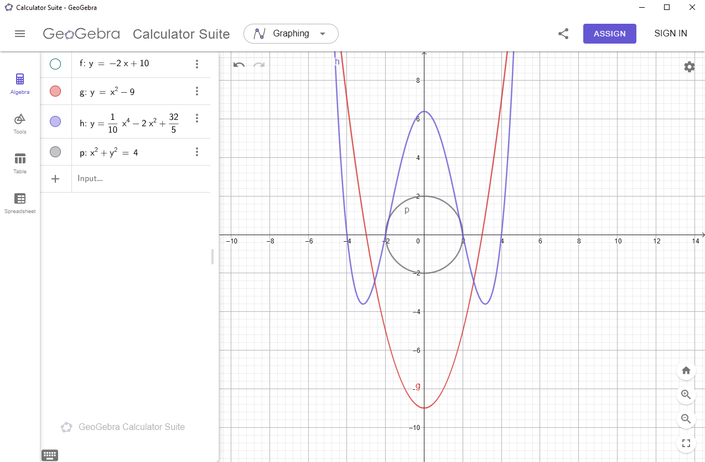
Hmmm, menyenangkan juga.
Perhatikan bahwa untuk menambahkan pangkat pada suatu ekspresi kita bisa menggunakan \(\square^2\) pada kalkulator kita atau kita bisa langsung ketik ^ dari keyboard yang digunakan. Jika ingin mendefinisikan pembagian bisa dengan \(\square \frac{\square}{\square}\) di kalkulator atau langsung menggunakan /. Masi banyak yang dapat kita eksplor lebih lanjut tentang ini.
Slider for The Better
Pada bagian sebelumnya sudah diberikan lebih lanjut mengenai bagaimana kita bisa menambahkan fungsi dan menggambarkan grafiknya. Sekarang bagaimana kita bisa membuat suatu variabel tambahan yang kita tahu variabelnya berada di angka apa saja. Ibaratnya kita ingin mengubah-ubah suatu bagian dari ekspresi namun tetap fungsi satu variabel. Misalnya fungsi kuadrat yang sudah ditampilkan sebelumnya yaitu \(y = a(x-h)^2 + 2\) dengan \(a\) dan \(h\) adalah suatu bilangan real positif? Bagaimana perubahan gambarnya?
Untuk menjawab ini kita bisa menggunakan fitur slider.
Pada Input Bars silahkan masukkan ekspresi yang kita inginkan.
y = a(x-h)^2 + 2Dalam hal ini \(a\) dan \(h\) adalah parameter fungsi. Ketika kita klik Enter pada Bar ekspresi tersebut, akan muncul garis dengan angka -5 hingga 5 secara automatis untuk masing-masing \(a\) dan \(h\).
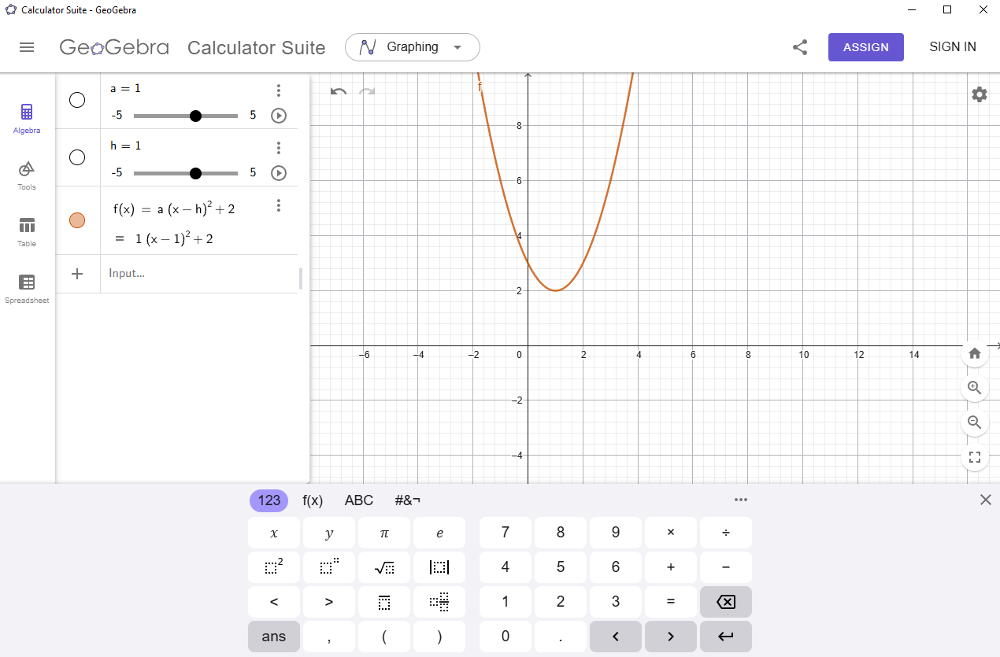
Silahkan geser-geser fungsi slider tersebut sesuai yang kita inginkan, gambar fungsi akan berubah-ubah bergantung pada parameternya.
Slider yang muncul hanya dari -5 sampai 5.
Misal kita ingin mengubah nilai-nilai parameter \(a\) dan mengatur step-size perubahan nilainya.
Klik angka di samping slider baik itu yang kiri atau kanan.
Ubah batas kiri dan kanan sesuai yang kita inginkan, dalam hal ini misalkan 1 hingga 10.
Pada bagian
Stepisi step-size yang diinginkan, dalam hal ini adalah \(0.1\) .
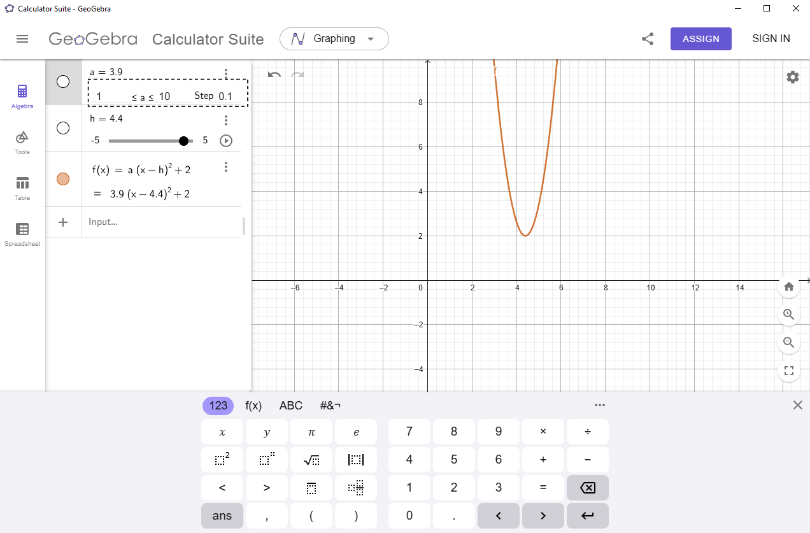
Transformasi Grafik
Setelah memahami cara menggunakan slider untuk mengubah parameter pada fungsi kuadrat atau fungsi lainnya, kita dapat melanjutkan dengan eksplorasi transformasi grafik menggunakan GeoGebra. Transformasi ini meliputi translasi (geser), refleksi (cerminan), rotasi, dan dilatasi (perbesaran/perkecilan).
Pada bagian ini, kita akan melihat bagaimana transformasi tersebut dapat dilakukan menggunakan GeoGebra Graphing Calculator.
Tranlasi (Pergeseran)
Umumnya translasi dapat dilakukan dengan menambahkan atau mengurangi nilai pada koordinat fungsi. Misalkan kita memiliki fungsi dasar \(y = x^2\). Kita dapat menggeser grafik ini ke kanan dengan cara mengubah variabel \(x\) menjadi \((x - h)\) atau menggeser ke atas atau ke bawah dengan cara mengubah \(y\) menjadi \(y-h\), di mana \(h\) adalah jarak pergeseran ke kanan (atau ke atas). Misalkan kita ingin menggeser fungsi ke kanan sebanyak 3 satuan (\(h=3\)) dan menggeser fungsi ke atas 3 satuan. Pada Input Bars masukkan fungsi berikut
y = x^2y = (x - 3)^2y-3 = x^2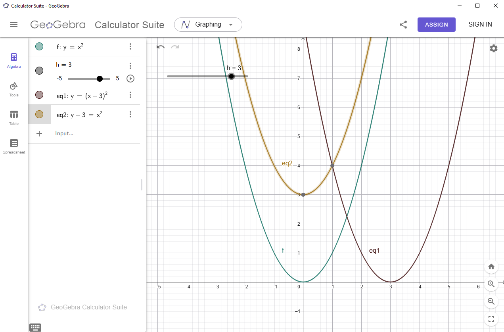
Translasi \(x^2\) ke kanan 3 satuan Refleksi (Cerminan)
Refleksi terhadap sumbu x dapat dilakukan dengan mengalikan fungsi dengan -1. Misalkan kita ingin mencerminkan fungsi \(y = x^2 + 1\) terhadap sumbu x. Pada Input Bars masukkan fungsi berikut
y = x^2 + 1y = -(x^2 + 1)Jika refleksi ditentukan pada sumbu tertentu kita dapat menggunakan fitur
Reflect Object about Linepada toolbar di sebelah kiri atau dengan mengetikReflect(A, ...)di mana...adalah sumbu yang kita tentukan danAadalah sebuah titik maupun fungsi yang direfleksikan.Reflect(f, y = x)Reflect(f, y = -x)Reflect(f, y = 2)Reflect(f, x = -3)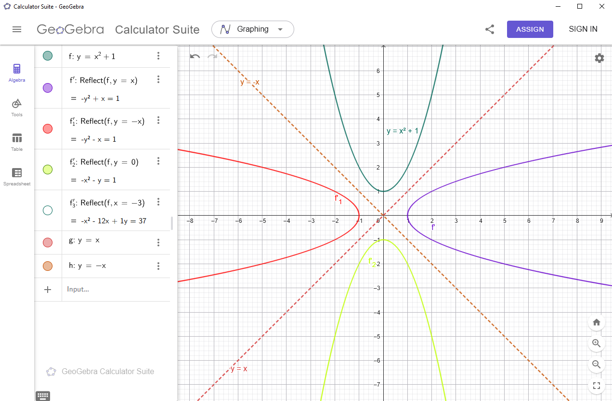
Refleksi \(f(x)\) terhadap beberapa sumbu Dilatasi (Perbesaran/Perkecilan)
Dilatasi dapat dilakukan dengan mengalikan fungsi dengan suatu konstanta. Misalkan kita memiliki fungsi dasar \(y = x^2\). Kita dapat memperbesar grafik ini dengan mengalikan fungsi dengan suatu faktor skala \(k > 1\) atau memperkecilnya dengan \(0 < \frac{1}{k} < 1\). Misalkan kita ingin melakukan dilatasi dengan faktor \(k=2\). Pada Input Bars masukkan fungsi berikut
y = x^2y = 3 * x^2y = 1/3 * x^2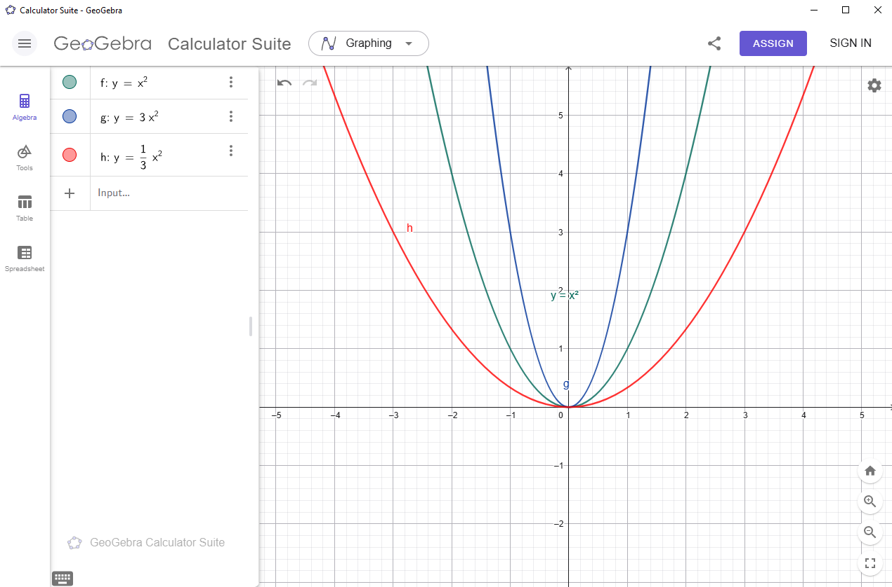
Dilatasi \(x^2\) dengan faktor skala 2 Rotasi
Rotasi grafik di GeoGebra dapat dilakukan dengan menggunakan fitur
Rotate Object around Point by Anglepada toolbar di sebelah kiri atau dengan mengetikRotate(A, angle, P)di manaAadalah objek yang akan diputar,angleadalah sudut rotasi dalam derajat, danPadalah titik pusat rotasi.Misalkan kita memiliki fungsi dasar \(y = x^2\) dan ingin memutar grafik ini sebesar 135 derajat terhadap titik asal (0,0) ke kanan dan ke kiri. Pada Input Bars masukkan fungsi berikut
y = x^2Rotate(f, 135°, (0,0))Rotate(f, -135°, (0,0))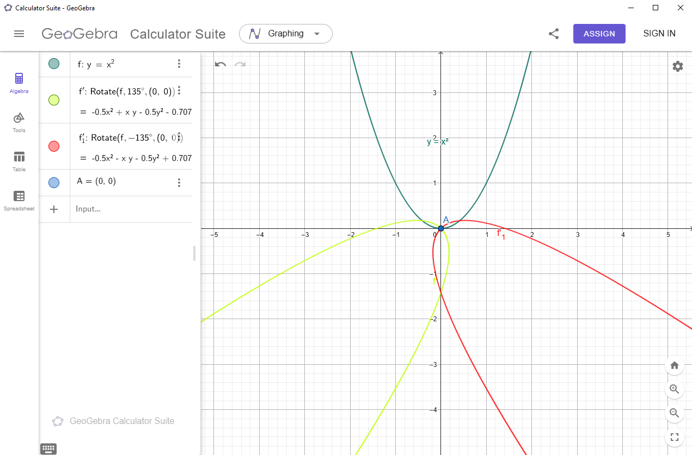
Rotasi \(x^2\) sebesar 135 derajat
kita diberikan fungsi: \[ \begin{align*} f(x) = |x| \end{align*} \]
Lakukan transformasi pada fungsi tersebut sehingga menghasilkan grafik yang memenuhi kriteria berikut:
Refleksi terhadap sumbu y,
Dari hasil 1, lakukan translasi ke kanan sebanyak 3 satuan,
Dari hasil 2, lakukan dilatasi dengan faktor skala 2,
Dari 3 hasil, lakukan rotasi sebesar 90 derajat searah jarum jam terhadap titik asal (0,0).
Buatkan grafik masing-masing nomor!
Kalkulator 3D
Sebelum melanjutkan ke bagian kalkulator 3D, pada bagian Perspective kita ganti kalkulator kita menjadi 3D Calculator.
Membuat Grafik Fungsi
Seperti yang sudah disinggung sebelumnya, kita dapat membuat grafik fungsi dengan bentuk eksplisit \(zz = f(x,y)\) dan bentuk implisit \(f(x,y,z)=0\) atau bahkan fungsi dengan variabel lain yang masih masuk ke dalam kategori ruang 3 dimensi di Geogebra.
Sedikit berbeda dengan kalkulator sebelumnya, pada kalkulator 3D kita dapat merubah sudut pkitang obyek yang ada dalam Graphics View. Jadi, kitda tidak hanya melihat bentuk obyek dari satu sudut pkitang saja, namun juga bisa melihat dengan sudut pkitang yang lain.
Misalkan kita ingin membuat sebuah kurva tiga dimensi dengan bentuk persamaan
\[ z = x^2 + y^2 \]
Maka kita bisa langsung saja memberikan ekspresi pada Input Bars
z = x^2 + y^2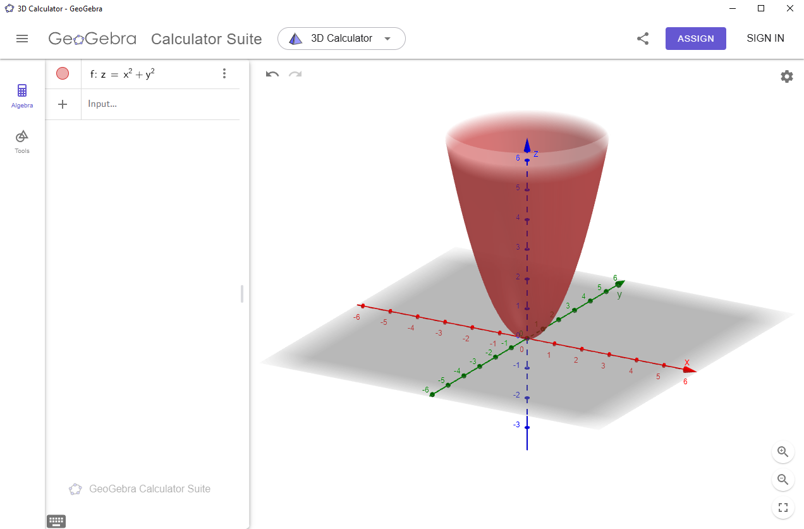
Untuk melihat bentuk lebih jelas, kita dapat klik di manapun di Graphics View lalu menggeser kursor kita sesuai dengan sudut pkitang yang diinginkan. kita juga bisa perbesar atau perkecil gambar di bagian pojok kanan Graphics View agar sesuai dengan keinginan.
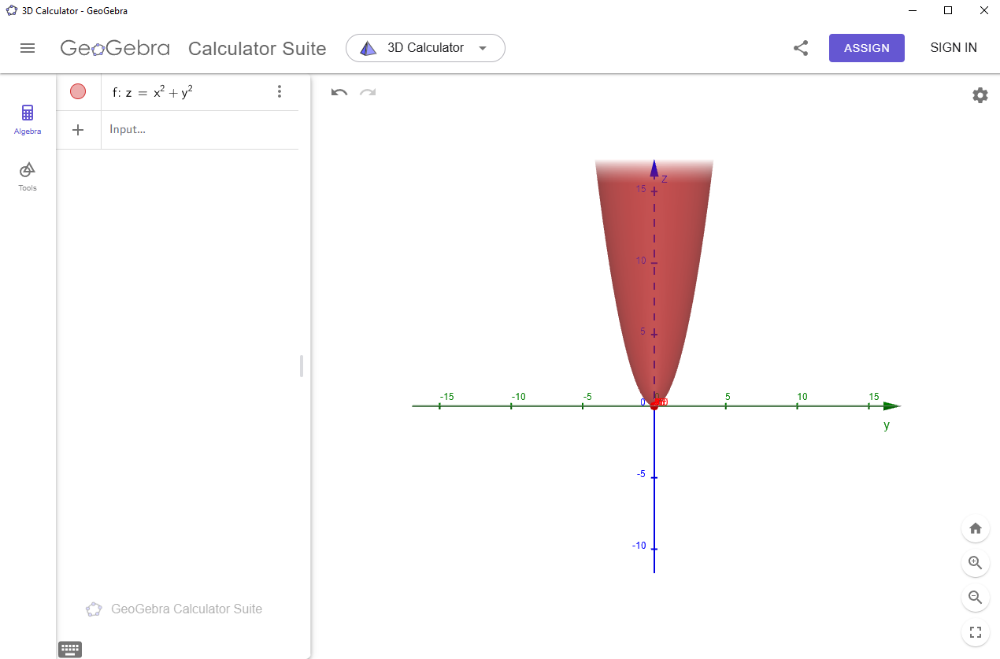
Kita juga bisa membuat beberapa grafik lain di bidang yang sama (sayangnya kita harus sedikit melakukan modifikasi tampilan agar terlihat bagus).
Misalkan kita ingin membuat grafik dari persamaan
\[ x^2 + y^2 + z^2 - 10x - 12y - 2z + 15 = 0 \]
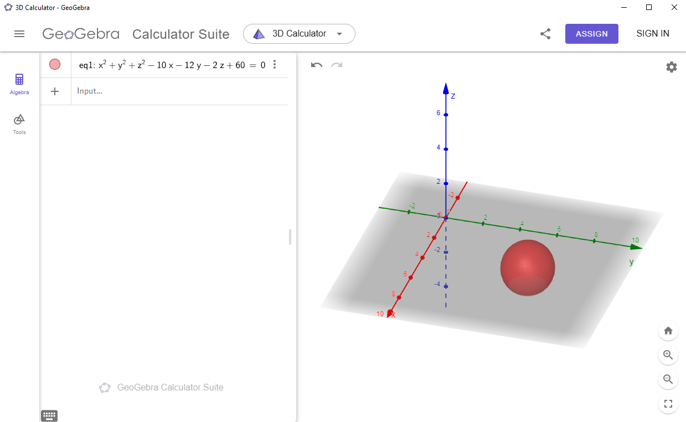
Kita mendapatkan bola! Kita juga bisa membuat persamaan-persamaan aneh lain.
Donat \[ (x^2 + y^2 + z^2 + 9 - 1)^2 - 4*9*(x^2 + y^2) = 0 \]
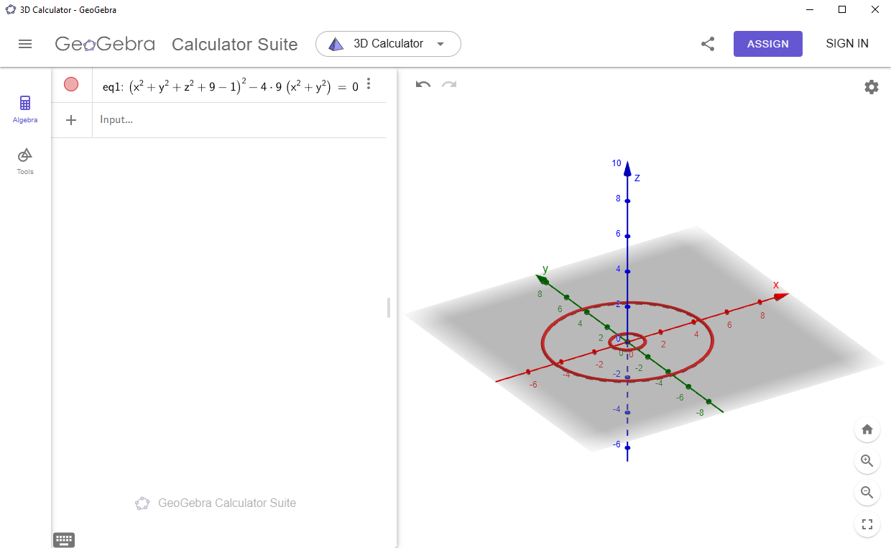
Donat Paraboloida Hiperbolik \[ x^2 - y^2 - z = 0 \]
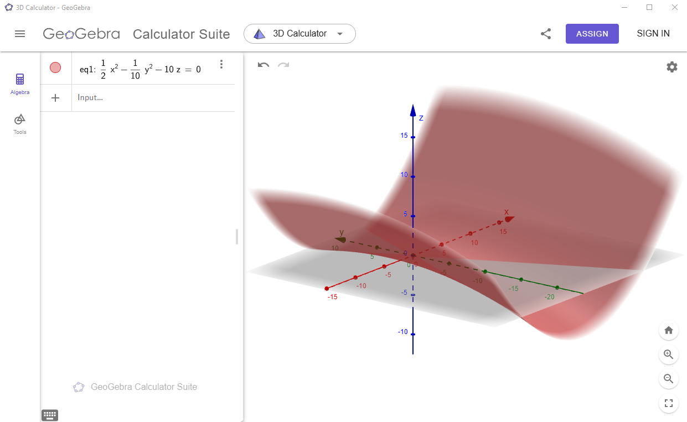
Pringles
Dan masih banyak lagi. Misalkan kita ingin mengetahui titik potong dari sistem persamaan 3 variabel.
\[ \begin{align*} 2x + y + z &= 7000\\ x + 3y + z &= 10000\\ 3x + y + 2z &= 11000\\ \end{align*} \]
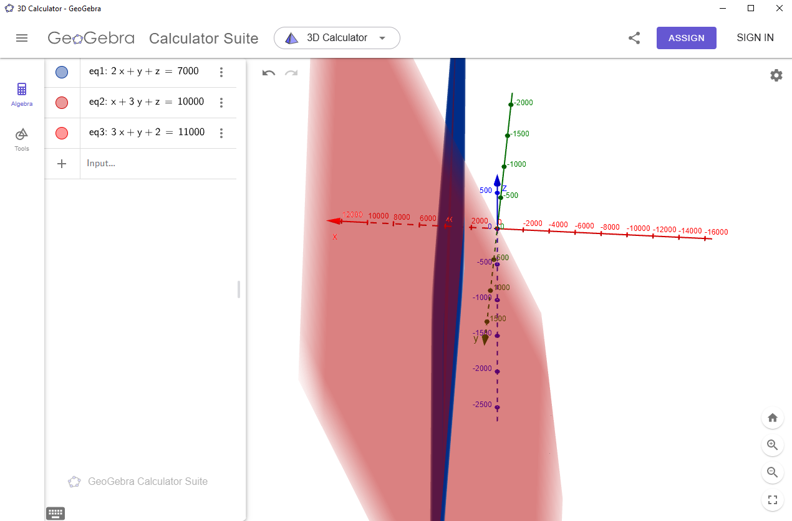
Yep, tidak enak dilihat. Ini adalah kelemahan dari Kalkulator 3D (setidaknya bagi penulis) yaitu kita tidak bisa melihat langsung titik potong dari obyek di 3 dimensi secara baik. Namun, setelah dipikir lebih jauh, kita bicara tentang perpotongan tembok di dunia nyata, bisa dibayangkan betapa menyeramkannya.
Kekuatan besar dari Kalkulator 3D ada pada kebebasannya dalam membuat obyek. Ketika kita kembali ke bidang 2 dimensi, kita bisa dengan mudah membayangkan obyek yang kita gambarkan, namun untuk bidang 3 dimensi hal itu lumayan melelahkan. Untuk itu kita gunakan Geogebra.
Dimensi Tiga
Salah satu kegunaan Kalkulator 3D adalah bagaimana membuat obyek lalu melakukan sesuatu pada obyek tersebut seperti misalnya mencari jarak antar dua garis, antar dua bidang, dan lain sebagainya.
Sebagai contoh misalkan kita membuat kubus ABCD.EFGH yang memiliki panjang rusuk 6 cm. Kita akan menentukan:
Jarak titik H ke titik tengah FB, dan
Jarak titik E ke bidang DBG.
Pertama, kita modifikasi tampilan kita sehingga hanya memunculkan sumbu-\(x,y,z\) dan kita buat terlebih dahulu kubus menggunakan Cube yang ada pada Tools.
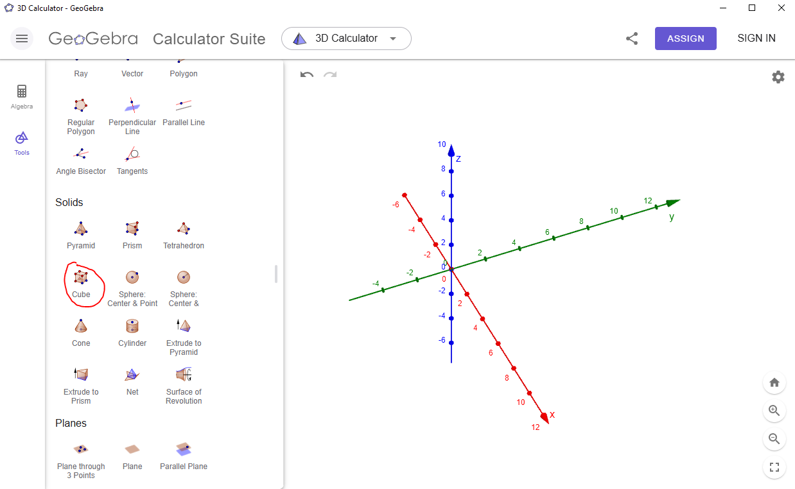
CubeLalu, buat kubus kita dengan cara klik 2 titik dengan jarak sejauh 8 satuan titik. Pastikan setelah membuat kubus, ubah opacity di pengaturan obyek kubus menjadi 0 untuk mempermudah gambar.

Mulai kita bisa mulai untuk mengukur jarak yang kita inginkan.
Untuk menjawab poin satu, kita akan mencoba untuk menghitung jarak dari titik H ke titik tengah FB.
- Kita buat titik yang berada di tengah F dan B menggunakan Tools
Point.
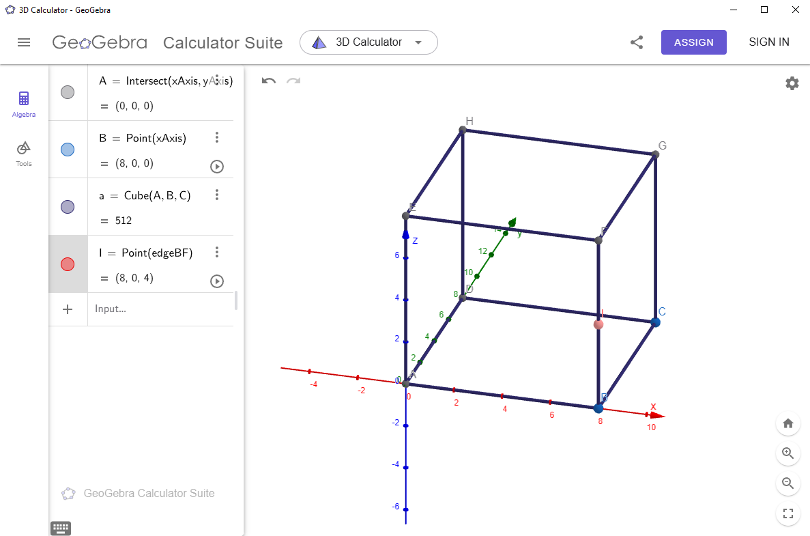
- Kita buat segmen garis menggunakan
Segmentdi Tools dan klik titik yang ingin dibuat garis, dalam hal ini adalah titik H dan I.
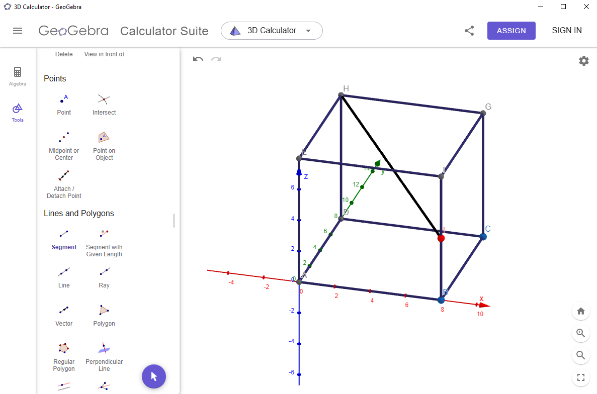
- Kembali ke kalkulator, kita akan lihat bahwa ada
Segmenyang muncul dan memberikan sebuah angka, angka tersebut adalah panjang segmen (jarak titik H dan I dalam satuan titik). Artinya kita peroleh bahwa jaraknya adalah 12 cm.
kita diberikan fungsi: Diberikan Kubus ABCD.EFGH (sama seperti contoh) dengan panjang rusuk 6 cm. Tentukan:
Jarak titik A ke garis HF.
Jarak titik H ke titik P di mana P adalah titik tengah dari bidang BCGF.
Contoh Lain
Misalkan kita ingin membuat vektor 3 dimensi
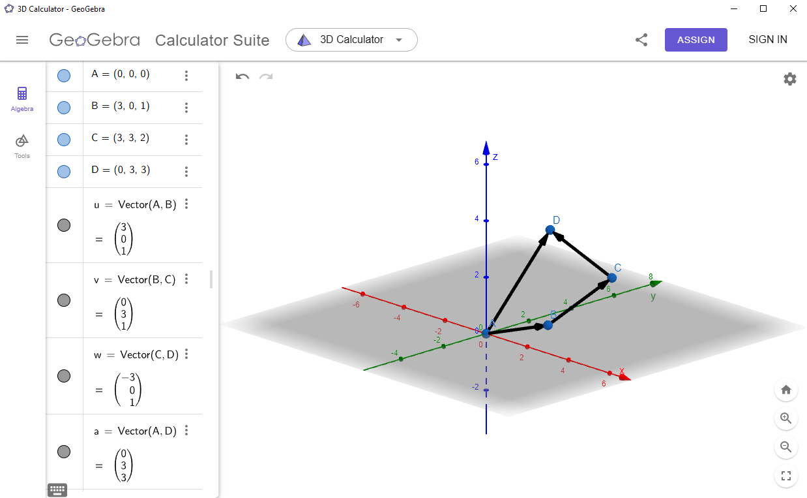
atau kita ingin membuat kurva parametrik
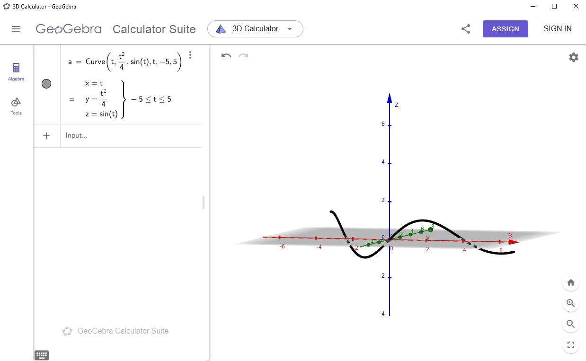
dan masih banyak lagi hal rumit yang bisa dilakukan.